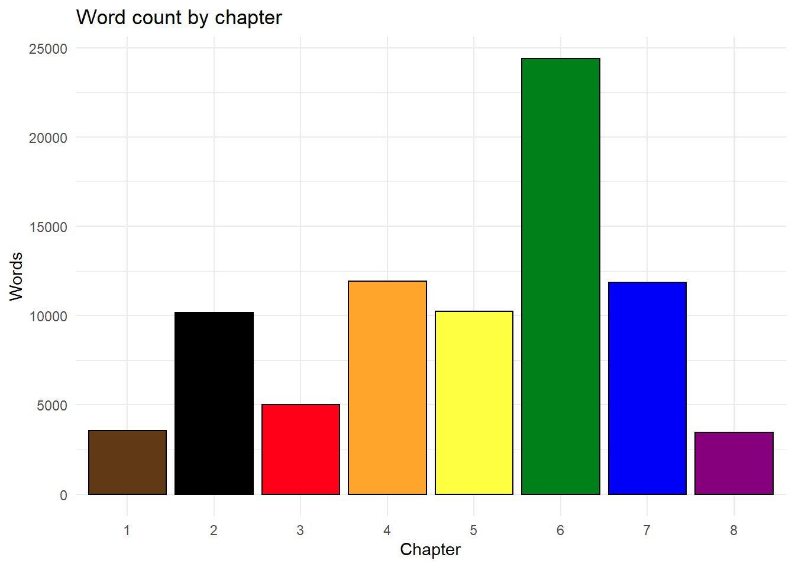
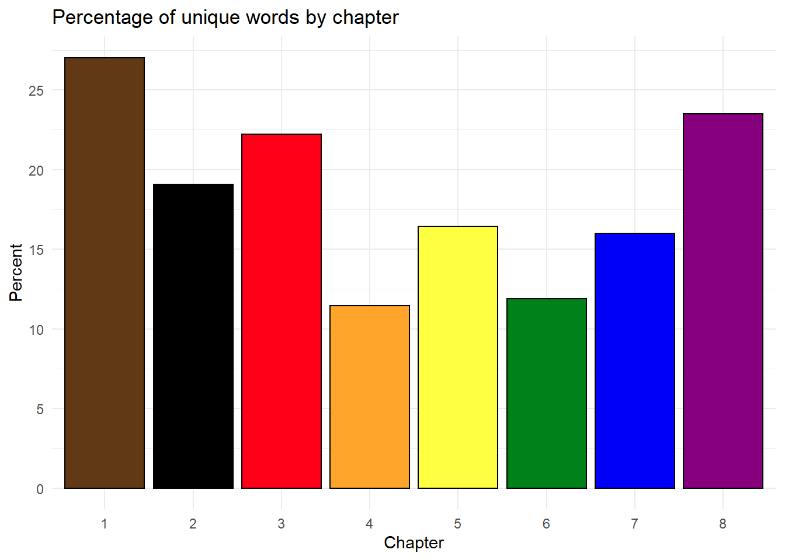
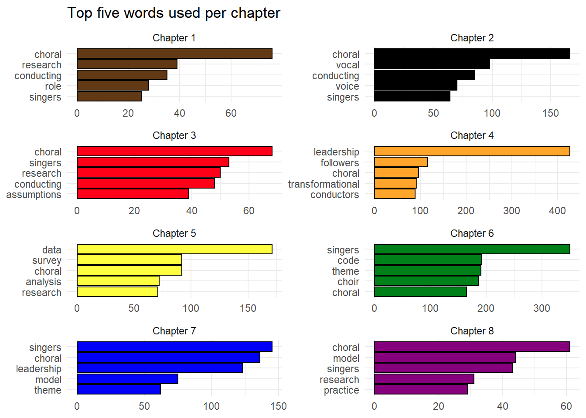
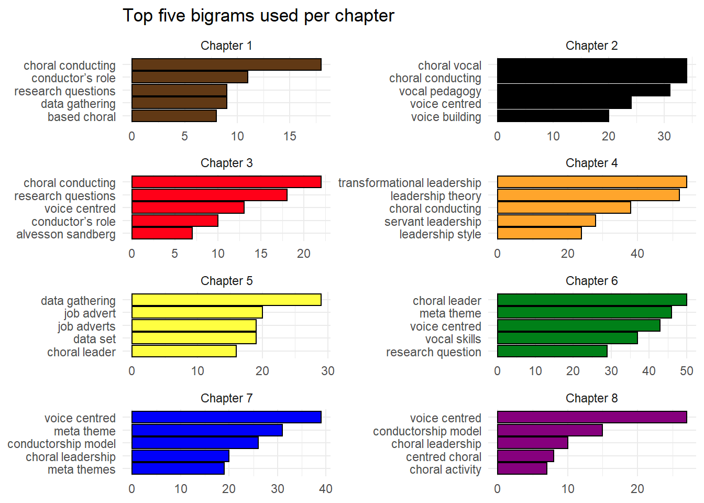
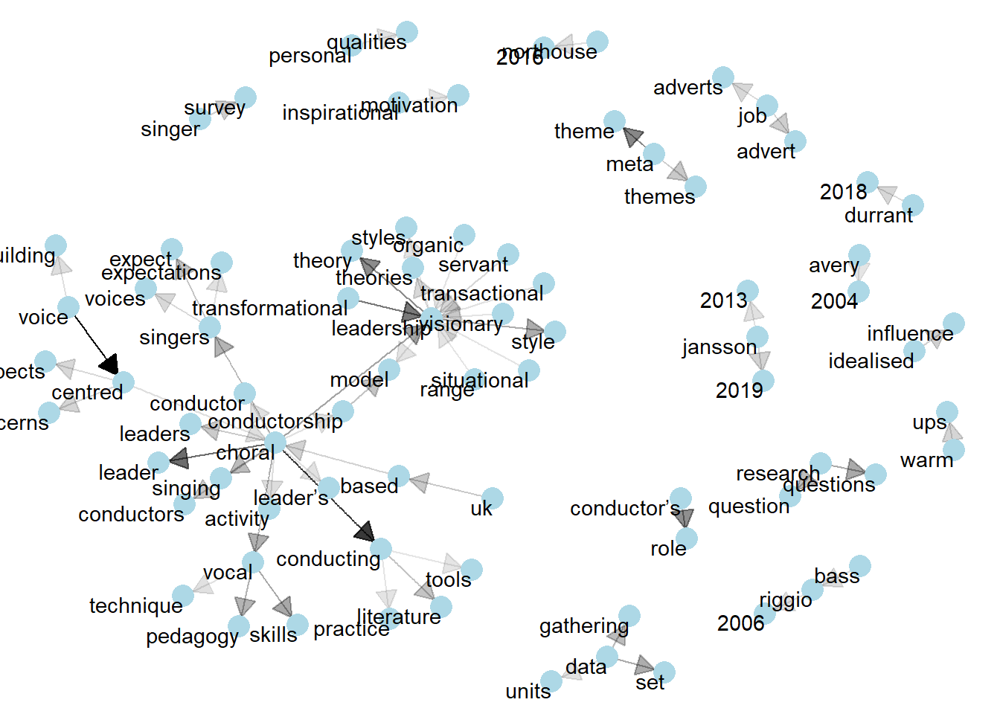
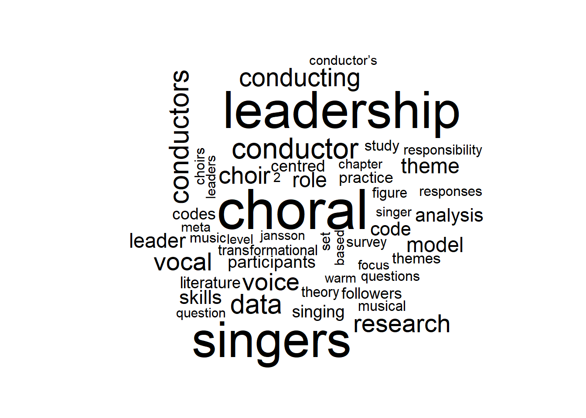
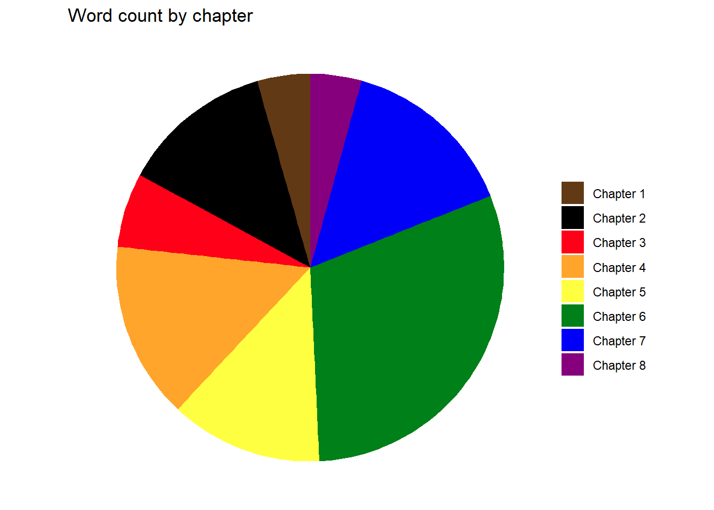

Dear Kathleen,
This is your thesis. As interpreted by a nerd.
Your thesis has 80613 words in total. Don’t freak out if this is different to something you wrote on an official form, R will count every word in every table and footnote. What matters is that it is 28613 words longer than your wife’s thesis.

In your thesis you used 12669 unique words and numbers. But which chapter had the highest proportion of unique words?

Chapter 1 would win at Scrabble.
But what are all those words? Here are the top words used per chapter, excluding “stop words” which are common function words like “and”, “the”, “it”, etc.

If you’re so nerdily inclined, you can also look at bigrams, pairs of consecutive words (excluding stop words).

Honestly, I’m not completely sure that this graph is at all useful, but it looks nice doesn’t it?

Who doesn’t love a word cloud? Here’s your top 50 words of the entire thesis (excluding stop words).

What about the most positive and negative words?
Finally, because I love you, a pie chart.
LOOK HOW HARD IT IS TO READ.

Here’s a clearer one.